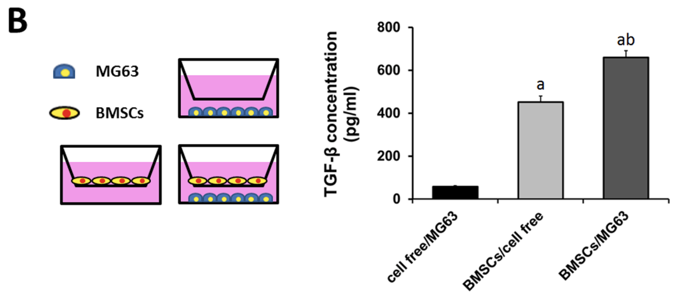
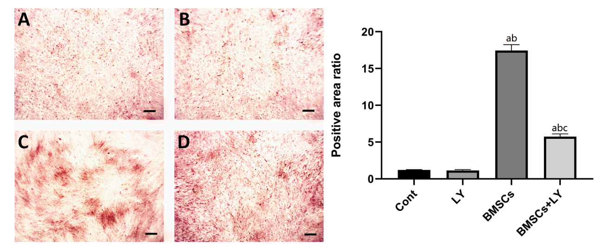
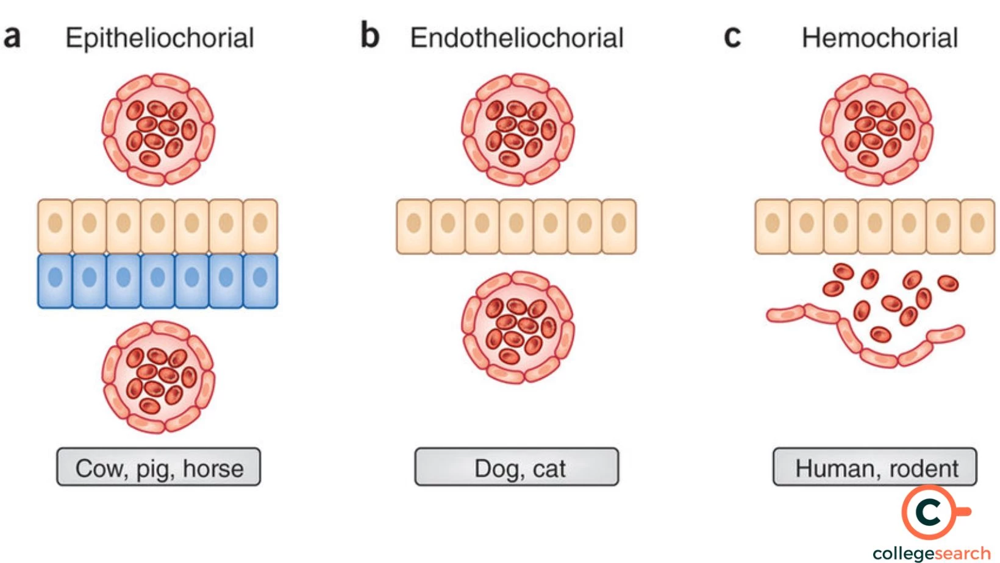
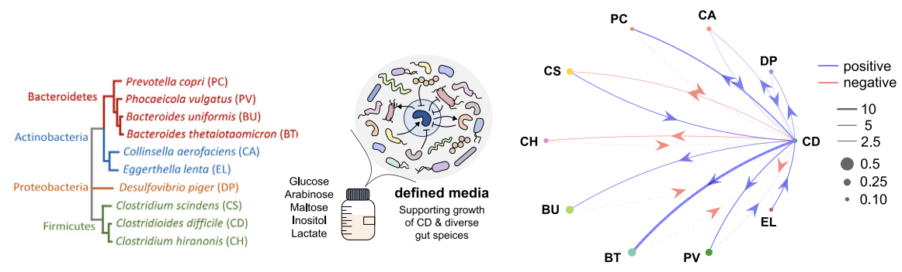
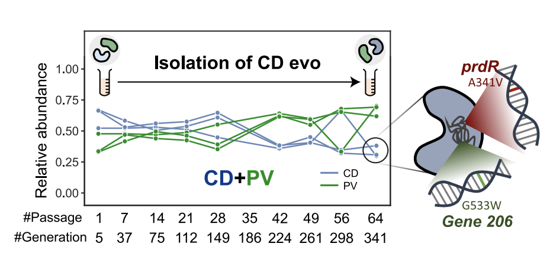

Surfactant protein C mutation links postnatal type 2 cell dysfunction to adult disease
Sitaraman et al. (2021)
This paper was presented by Dr. T. The researchers here described a protein, surfactant protein C (SP-C), which is secreted by alveolar epithelial type II (AT2) cells and involved in surface tension regulation of lung epithelium. Mutations to the gene for this protein, SFTPC, have been linked to pulmonary diseases such as diffuse parenchymal and fibrotic lung disease. The researchers demonstrate that mutations to this gene may confer heightened risk of lung disease by impacting postnatal lung development. To this end, the researchers utilized a mutated mouse model, with a disease-associated Sftpc mutation, L188Q. They isolated lung tissue and epithelial cells during postnatal development to assess various toxicological endpoints.
Further Details

In Figure 1, Sitaraman et al. showed that their mouse model did indeed have impaired lung repair by inducing lung injury with bleomycin, which is a chemotherapy drug and pulmonary toxin. Lung tissue sections are shown from the wildtype (top) and mutant (bottom) mice, where we can see more inflammatory markers such as presence of lymphocytes and increased collagen.

In Figure 2, we can see that the mutant mouse model also had reduced frequency of AT2 cells, demonstrated by colocalization of proSP-C and ABCA3 stains, markers of AT2 cells. The researchers also performed Western blot analysis and found that pro-SP-C seems to accumulate in mutant AT2 cells, with very low levels of mature SP-C detected. Importantly, this reduction persisted into adulthood.

The AT2 cells also seem to display increased oxidative stress, seen through fluorescence of DCDFA, a dye for reactive oxygen species, in the presence and absence of an oxidative stress inducer, tert-butyl hydrogen peroxide (TBHP)
The researchers were also able to link this increase in oxidative stress with increased apoptotic signaling and impaired differentiation in isolated AT2 cells.
The presence of oxidative stress was consistent with genomic and proteomics data, which both showed increased expression of pathways involved in the stress response of mice. More specifically, cells isolated at postnatal day 4 had different proteomic profiles versus those isolated at postnatal day 21, suggesting adapatation to the toxicity.
Finally, the researchers assessed several stress response markers at postnatal day 4 and 21 in wildtype and mutant mice lung cells and found alterations to the ability to resolve stress.
The results from this study indicate that a decrease in AT2 cells persisting into adulthood from postnatal development is a driving factor in stress associated with mutations of the SFTPC gene.

High-Efficiency Lentiviral Transduction of Human CD34+ Cells in High-Density Culture with Poloxamer and Prostaglandin E2
Uchida et al. (2019)
This paper was presented by Lynzie and Alexis. This study explored factors that impact lentiviral transduction efficiency of hematopoietic stem cells (HSCs) with genes of interest for its implication in gene therapy. The researchers have previously established a serum-free medium with "minimal cytokines" that improved transduction and here demonstrate that transducing higher-density cultures improves efficiency. They also identify two adjuvants, poloxamer 407 (P407) and prostaglandin E2 (PGE2), for transduction efficiency
Further Details

To demonstrate that high-density cell cultures are optimal for transduction, the researchers transduced human CD34+ cells with a GFP-encoding lentiviral vector at different cell densities and quantified the amount of cells expressing GFP and the vector copy number, both of which increased in a dose-dependent manner.
The researchers also explored how alterations to multiplicity of infection can impact transduction efficiency and found that cell density had the greatest effect, which may imply a role of cell-cell interactions in this phenomenon.

In Figure 4, the researchers demonstrated that a combination of PGE2 and P407 can further increase the amount of cells that express GFP as well as the vector copy number.

Up to this point, the experiments described in this paper have been performed in vitro. In order to bridge the gap to human health application, the researchers employed a mouse transplantation experiment to assess the efficiency of xenografting.
The researchers transduced low- and high- density cell cultures with a GFP-encoding lentiviral vector, then transplanted these cells into immunocompromised mice. After assessing expression of GFP, they found that the high-density cell culture yielded increased GFP expression after transplantation, with similar % engraftment in peripheral blood cells.
The results described in this study offer insight into a potential avenue for improving existing stem cell therapies with some preliminary insight into the potential mechanisms at play.
A crucial note about these findings is that transducing with higher cell densities may not be a universal optimization strategy, especially for adhesive cells which may face decreased fitness in crowded environments.
Bone marrow mesenchymal stem cells paracrine TGF-B1 to mediate the biological activity of osteoblasts in bone repair
Zhang et al. (2023)
This paper was presented by Ameera and Banoo. This study explored how bone marrow mesenchymal stem cells (BMSCs) carry out their function of tissue repair and how this may have implications in stem cell therapy for regenerative medicine. Specifically, the researchers elucidate the function of transforming growth factor beta-1 (TGF-B1), which is secreted by BMSCs.
By employing a Transwell coculture system to maintain a physical partition between cells, the researchers found that paracrine secretion of TGF-B1 upregulated osteogenesis and migration of osteoblast-like cells.
Further Details
The above figure illustrates the main idea behind the Transwell system and some preliminary data that seems to suggest the presence of osteoblast-like cells (MG63) causes BMSCs to secrete more TGF-B1.

In Figure 3, the researchers demonstrated that in the presence of BMSCs, osteoblast-like cells have an increased ability to mineralize, which is crucial for bone formation. The introduction of a TGF-B1 receptor inhibitor (LY) negated this effect, showing the necessity of TGF-B1.
The researchers also explored ALP activity, gene expression and migration and found similar increases driven by TGF-B1.
The researchers conclude that BMSCs are involved in paracrine signaling that promotes osteogenesis and other processes in osteoblasts, primarily through the secretion of TGF-B1.
The work here may have interesting implications in regenerative medicine, as transplantation of stem cells is a common avenue for tissue repair.
Uterine Receptivity in Merriam's Kangaroo Rat (Dipodomys merriami)
Dudley et al. (2018)
This paper was presented by Breann and Madison. This study was a bit different than the rest. It was primarily a life history paper with some investigation into cellular biology. The focus of the paper was uterine surface remodeling and its quirks in the kangaroo rat.
Further Details
The kangaroo rat, unlike many other rodents, exhibits a less-invasive type of placentation known as endotheliochorial placentation. This prevents excessive invasion from fetal tissues into the maternal blood stream, as contrasted with hemochorial placentation, where maternal and fetal blood are separated by only a single cell layer.
The researchers investigated the structural changes that occur to the uterine epithelium of the kangaroo rat. The authors demonstrate that lateral adhesion of cells is not maintained in the kangaroo rat, which suggests a different mechanism must be preventing invasion of fetal tissues.
In this figure, the researchers stained uterine epithelium of kangaroo rats at various different stages of pregnancy for a protein called E-cadherin. E-cadherin is involved in cell-cell adhesion, and may play a role in limiting the invasiveness of placentation during pregnancy.
Images A-D are non-pregnant, early pregnancy, pre-implantation, and during implantation, respectively. E and F are control images. The main finding here is during pre-implantation, E-cadherin seems to primarily localize on the cell membrane before pregnancy but seems to sequester intracellularly during pre-implantation. This would lower lateral cell adhesion and rejects the hypothesis that retention of lateral adhesion inhibits invasion by the fetus.
The work here is definitely unique in presentation and demonstrates the fascinating intersection between ecology and cellular biology.
Phocaeicola vulgatus shapes the long-term growth dynamics and evolutionary adaptations of Clostridioides difficile
Sulaiman et al. (2024)
This paper was presented by Jhoana and myself. This study investigated the ecological dynamics of the gut microbiome, specifically with regards to interactions with C. difficile. C. difficile is an opportunistic pathogen that can invade the gut microbiome, reduce gut floral biodiversity, and release toxins into the gastrointestinal tract. This study was interested in understanding how the pathogen from the lens of an ecologist, treating the gut microbiome as a playground for several different species of microbes that need to find ways to survive amid ever-changing conditions.
Further Details
The researchers aimed to estimate growth dynamics of C. difficile in the presence of other endogenous microbes. They did so by culturing combinations of microbes together and measuring abundance over time, which can be used to estimate parameters for a generalized Lotka-Volterra model.
The generalized Lotka-Volterra model (gLV) is an extension of the Lotka-Volterra model, or the predator-prey model. It simply describes the effect that one population size has on a different population size, and is commonly used to describe predator-prey interactions. The "generalized" part refers to the fact that now we are not looking only at a pair of populations, but any number of populations.
The researchers display their gLV but also decide to investigate how changing the environment can alter these interactions. They modify carbohydrate concentration and amino acid concentration and find something interesting.
In a carbohydrate-rich environment, P. vulgatus outcompeted C. difficile to exclusion. However, simply by limiting the amount of carbohydrates, both microbes exhibited stable coexistence, which the authors showed was facilitated by cross-feeding.

Upon isolation of this coexisting strain of C. difficile, the researchers found mutations to genes involved in the metabolism of proline, with corresponding alterations to gene expression and metabolomics profiles that suggest the microbe had evolved to depend less on proline and more on glucose.
Interestingly, the authors were also able to show that this evolved C. difficile exhibited lowered toxicity in vivo when examining a mouse model.
It is astonishing that such a small change in an environment can have large impacts after several generations, but it is important to discuss the limitations of microbiome such as these. The complexity of the human gut is hard to capture, and the use of germ-free mice fails to bridge this gap. Nonetheless, these small advances in our knowledge can guide the way for future research.